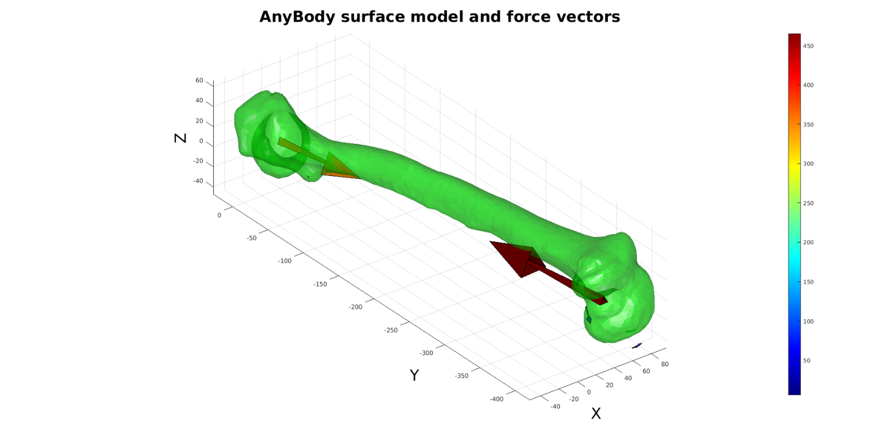

importAnyBodyOutput
Below is a demonstration of the features of the importAnyBodyOutput function
Contents
clear; close all; clc; % warnings off;
Plot settings
fig_color='w'; fig_colordef='white'; faceAlpha=1; fontSize=25; markerSize=25; cMap=jet(250);
%Set main folder defaultFolder = fileparts(fileparts(mfilename('fullpath')));
Import AnyBody analysis data
pathName_TXT=fullfile(defaultFolder,'data','AnyBody'); fileName=fullfile(pathName_TXT,'femurData.txt'); structOut = importAnyBodyOutput(fileName);
Import AnyBody STL file as patch data to aid visualization
pathName_STL=fullfile(defaultFolder,'data','STL'); fileName=fullfile(pathName_STL,'femur.stl'); [stlStruct] = import_STL_txt(fileName);
Plotting the models
pColors=autumn(numel(stlStruct.solidNames)); figuremax(fig_color,fig_colordef); title('AnyBody surface model and force vectors','fontSize',fontSize); xlabel('X','fontSize',fontSize);ylabel('Y','fontSize',fontSize); zlabel('Z','fontSize',fontSize); hold on; for q=1:1:numel(stlStruct.solidNames) F=stlStruct.solidFaces{q}; V=stlStruct.solidVertices{q}; V=V*1000; patch('Faces',F,'Vertices',V,'FaceColor','g','EdgeColor','none','FaceAlpha',0.5); end view(3); axis equal; axis tight; axis vis3d; grid on; camlight('headlight'); lighting phong; drawnow; % Access and visualize force data F_vec=structOut(1).F; %Force vectors Fm=sqrt(sum(F_vec.^2,2)); V_vec=structOut(1).Pos; %Position vectors V_vec=V_vec*1000; %Conver to meters logicPlot=Fm>(max(Fm)/100); %Logic for selecting vectors to plot a=150*[min(Fm(logicPlot)) max(Fm(logicPlot))]./max(Fm(logicPlot)); %Arrow length scaling to magnitude range [Ff,Vf,Cf]=quiver3Dpatch(V_vec(logicPlot,1),V_vec(logicPlot,2),V_vec(logicPlot,3),F_vec(logicPlot,1),F_vec(logicPlot,2),F_vec(logicPlot,3),Fm(logicPlot),a); patch('Faces',Ff,'Vertices',Vf,'EdgeColor','k', 'CData',Cf,'FaceColor','flat','FaceAlpha',1); colormap(cMap); colorbar;

GIBBON www.gibboncode.org
Kevin Mattheus Moerman, gibbon.toolbox@gmail.com
GIBBON footer text
License: https://github.com/gibbonCode/GIBBON/blob/master/LICENSE
GIBBON: The Geometry and Image-based Bioengineering add-On. A toolbox for image segmentation, image-based modeling, meshing, and finite element analysis.
Copyright (C) 2018 Kevin Mattheus Moerman
This program is free software: you can redistribute it and/or modify it under the terms of the GNU General Public License as published by the Free Software Foundation, either version 3 of the License, or (at your option) any later version.
This program is distributed in the hope that it will be useful, but WITHOUT ANY WARRANTY; without even the implied warranty of MERCHANTABILITY or FITNESS FOR A PARTICULAR PURPOSE. See the GNU General Public License for more details.
You should have received a copy of the GNU General Public License along with this program. If not, see http://www.gnu.org/licenses/.